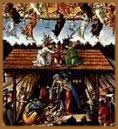

Você sabia
que Jesus nasceu antes do que costumamos chamar de era cristã?
Descubra aqui por que os historiadores ainda discutem detalhes
dessa
história que marcou o início do cristianismo.
A data
O
nascimento de Jesus é o episódio que supostamente
assinala o início da era cristã. Mas, devido a
um erro de cálculo, cometido no século 6 d.C.
pelo monge Dionísio, o Pequeno, as duas datas não
coincidem. Sabe-se hoje que Jesus nasceu antes do ano 1 - entre
8 e 6 a.C. Pode-se afirmar isso com razoável segurança,
graças a uma passagem muito precisa do evangelho de Lucas.
Segundo o evangelista, o fato aconteceu na época do recenseamento
ordenado pelo imperador romano César Augusto. Esse censo,
o primeiro realizado na Palestina, tinha por objetivo regularizar
a cobrança de impostos. E os historiadores estão
de acordo em situá-lo no período que vai de 8
e 6 a.C.
Nesse triênio, o ano mais provável
é 7 a.C. Pois nele se deu um evento astronômico
que poderia explicar uma outra passagem da narrativa evangélica:
a estrela natalina mencionada por Mateus. Trata-se
da conjunção dos planetas Júpiter e Saturno,
que produziu no céu um ponto de brilho excepcional. Se
o astro de Mateus for mais do que um enfeite mitológico,
ele deve corresponder a tal fenômeno, que certamente impressionou
os astrônomos da época. Esses sábios, atraídos
a Jerusalém pelo movimento aparente do ponto luminoso,
seriam os magos do Oriente, de que fala o evangelista. Com o
recenseamento de Lucas e a estrela citada por Mateus, conseguimos
chegar o mais perto possível do ano do nascimento. O
mês e o dia continuam, porém, em aberto.
Festival Pagão
X Festa de Natal
O 25 de dezembro é obviamente uma data
simbólica. Nesse dia, ocorria em Roma o festival pagão
do Solis Invictus (Sol Invencível).
Realizado logo depois do solstício de inverno - quando
o percurso aparente do Sol ocupa sua posição mais
baixa no céu - o evento celebrava o triunfo do astro,
que voltava a ascender no firmamento. Muito cedo, os cristãos
associaram as virtudes solares a Jesus, atribuindo-lhe várias
qualidades do deus Apolo. Não surpreende que
acabassem por transformar o festival pagão na sua festa
de Natal. Isso aconteceu por volta do ano 330 d.C.
A ascendência
do Messias
Mateus, seguido por Lucas, afirma que Jesus nasceu
em Belém - hoje em território palestino. Essa
afirmação chegou a ser contestada por alguns estudiosos
contemporâneos. Pois Belém era a cidade de Davi
e, segundo a tradição, o Messias esperado deveria
surgir entre a descendência desse antigo rei de Israel.
Situar o nascimento em Belém - dizem os
contestadores - era uma forma de legitimar Jesus na condição
de Messias. Embora interessante, esse raciocínio crítico
não se apóia em nenhuma prova convincente. Lucas,
ao contrário, oferece um bom argumento a favor de Belém:
José, o esposo de Maria, futura mãe de Jesus,
pertencia a uma família originária daquela cidade
e a regra do recenseamento exigia que cada indivíduo
se alistasse em sua localidade de origem. Por isso, a maioria
dos especialistas aceita Belém sem reservas.
O lugar onde
Jesus nasceu
De passagem por essa cidade, José e Maria
procuraram onde se alojar. Mas, segundo Lucas, "não
havia um lugar para eles na sala". A palavra sala
(katalyma, em grego) tanto pode designar uma pousada
como a casa de algum parente de José. Estando o local
cheio, devido ao grande número de pessoas vindas de outras
regiões para o recenseamento, o casal teve que se acomodar
do lado de fora, talvez sob um alpendre, junto à manjedoura
dos animais. Foi aí que Maria deu à luz.
O nascimento de Jesus nesse local humilde, rejeitado
pelas "pessoas de bem", possui um profundo significado
teológico. Ele repete a saga de grandes personagens mitológicos,
como o deus indiano Skanda-Murugan (correspondente ao Dioniso
dos gregos), que nasceu entre os caniços do pântano.
E anuncia a trajetória futura daquele que seria a mais
perfeita expressão da figura arquetípica do Servo
de Deus.